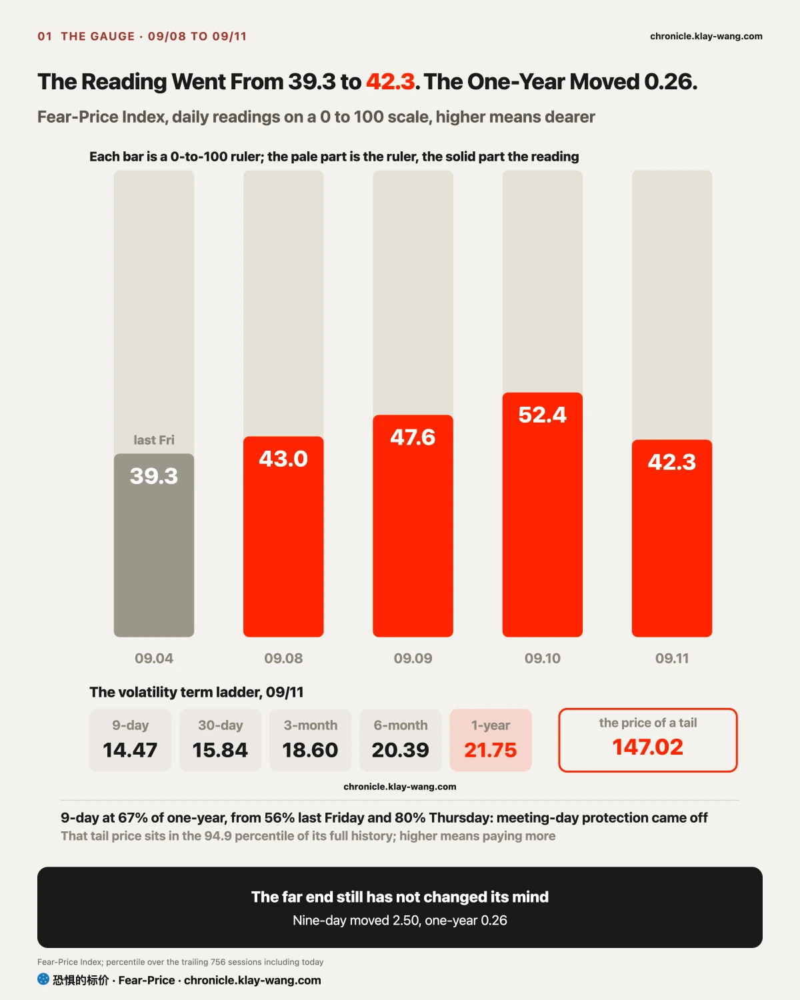
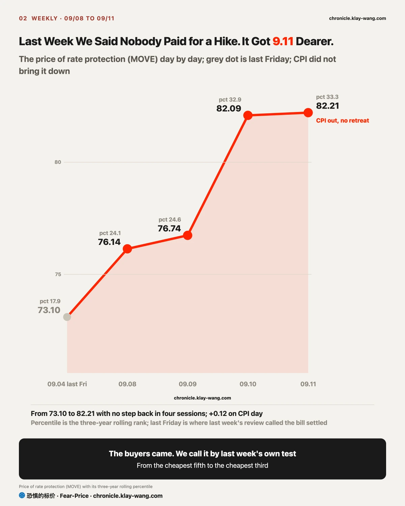
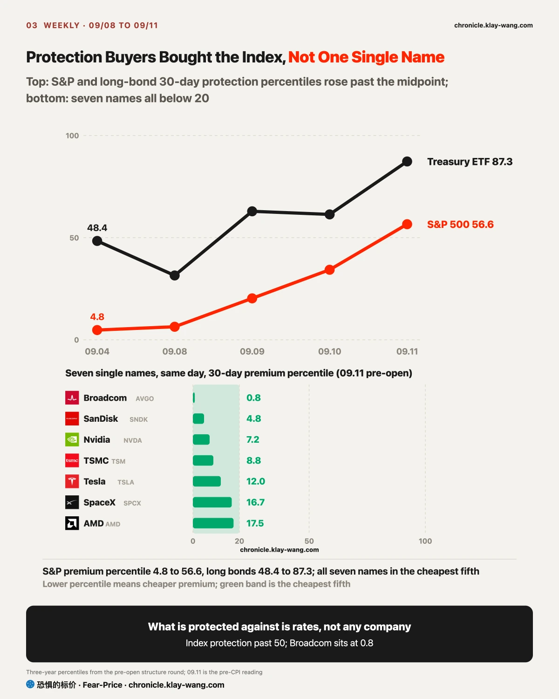
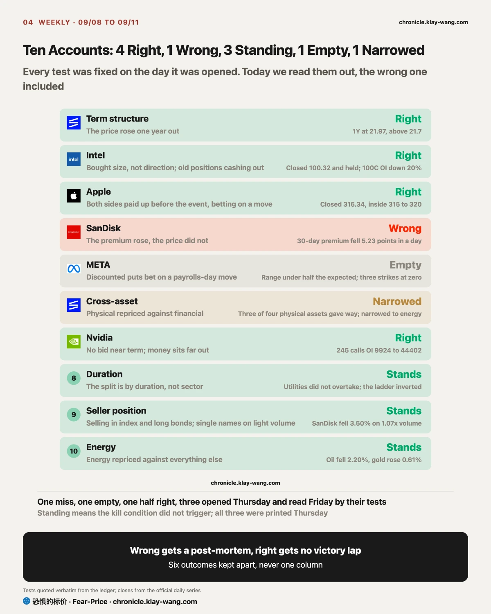
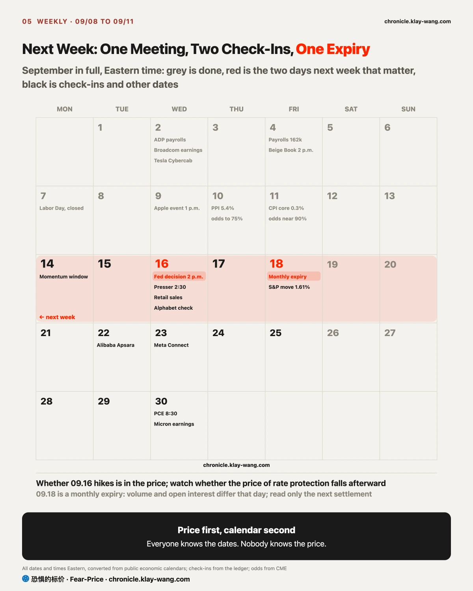

Fear-Price Index · 2026-09-11 · reading 42.3/100: one-year implied volatility VIX1Y at 21.75, the 42.3rd percentile of the past three years, higher means dearer. Daily ledger and methodology → chronicle.klay-wang.com · Please credit: Fear-Price Index · chronicle.klay-wang.com
Last Friday 39.3, a high of 52.4 on Thursday, 42.3 at Friday's close. The one-year moved only 0.26 on the week; the nine-day rose 2.50 and touched 17.70 on Thursday. Last week said the front end was pricing a meeting and the far end had not changed its mind, with an expiry condition of the one-year rising clearly. It did not rise clearly, so the line stays, with one number added to the test: the one-year has to clear 23 to count as clear.

My call: the September hike is settled, bonds are betting on further hikes, stocks on one and done, and I side with bonds. One side changes its mind next week.
Whether is settled: on CPI day all four banks moved to a September hike, and the disagreement moved to what follows. The most hawkish, TD, has hikes in September, October and next January; the most dovish, Citi, has one hike and a cut next June; two hikes sit between them.
The bond market is betting on the path with more hikes. The price of rate protection went from 73.10 last Friday to 82.21 on Friday, up every session, and held at 82.21 on CPI day. That price measures how much rates might move; the hike was already at seventy percent before CPI, so this money bought where rates go after it.
On Thursday the two-year yield rose by more than a dozen basis points, the most since 2024; the thirty-year touched 5.37%, the highest since 2007; the Treasury's six-billion-dollar buyback that day filled only 5.2 billion because offers were not cheap enough. The same day Brent settled at 107.63 dollars, a four-month high.
Two reasons I side with bonds. First, this inflation comes from energy and the fiscal side: diesel and gasoline were each more than a third of the PPI and CPI increases, and oil is set by Middle East supply, with Houthi forces seizing a Yemeni port on Thursday and Saudi output down 23% in August from July, none of which one hike touches. Second, the Treasury is issuing and the buyback did not fill; long yields are set by supply, and a hike only moves the short end. With both in place, one hike does not end it. Stocks treated the hike as done on Friday, the price of stock protection fell almost two points with all twenty-nine names lower, and that price comes back next week.
If the price of rate protection falls back below 76 after the 09.16 decision, bonds have accepted one and done, and this call is overturned. If the S&P's thirty-day protection climbs back above 14 after the decision, stocks changed their mind first, and this call stands.

My call: what was genuinely repriced this week were the spend-first-collect-later businesses, the cloud providers and memory; Nvidia fell with its customers, and the reason to sell it was positioning, not its cash flow. Four steps follow: how each collects cash, whose cash flow a rate move discounts, what rate path the bond market set, and how the options market checks it.
Step one, how each collects cash. Nvidia collects earliest in the whole AI chain: it ships chips to the cloud providers, gets paid in about two months, runs gross margins around seventy percent and borrows almost nothing. Its customers, Microsoft, Amazon, Alphabet and Meta, are the opposite: they spend tens of billions building data centers first and recover it over four to six years through rent and usage fees, and this year they have issued close to two hundred billion dollars of bonds to fund it. SanDisk and Micron sit in between: they pay for new capacity themselves, it ships two or three years later, and those years are a bet that memory prices hold.
Step two, whose cash flow a rate move discounts. When long rates rise, the later the cash flow the harder it is discounted, so the first to be repriced are the spend-first-collect-later businesses, the clouds and memory. Nvidia's own cash flow is near, so on its own it should fall least; it fell because its revenue is the capital spending of the clouds, and the market asked whether the payers can keep spending, then sold the collector before the answer came.
Step three, the rate path the bond market set: the price of rate protection rose 12.5% on the week and did not fall back after CPI, so bonds are betting on further hikes after September. The discount-rate end rose this week, and the order in the first two steps is this week's order of declines.
Step four, the options market tests whether this was repricing or positioning. If it were repricing, the price of protecting Nvidia should have risen; it did not, it stayed in the cheapest tier of the twenty-one alongside Broadcom and SanDisk, Thursday's heavy volume was in the semiconductor ETF and not in Nvidia, and the money betting on a rise bought December calls struck 12% above, thirty-four thousand contracts added in a day. Someone was selling the index and long bonds; nobody was betting against Nvidia. Memory reads the same: SanDisk fell 3.5% on Friday with no increase in volume and no rise in protection.
With the four steps done, the week's moves fall into place. The three biggest fallers, SanDisk, Nvidia and Micron, were August's big winners: SanDisk and Micron were discounted, Nvidia fell with its customers. The biggest risers, AMD, Intel, Meta and Apple, barely moved in August. AMD and Nvidia sell the same kind of chip, one rose 8% and the other fell 5%; the supply chain cannot explain that gap, positioning can. The exceptions are SpaceX and Tesla, August's biggest gainers and still rising this week.
In Apple, SpaceX and Tesla, this week's option volume points past this week:
If the price of protecting Nvidia rises clearly next week while the stock keeps falling, someone has begun betting against it directly, and this call is overturned; if SanDisk's volume exceeds 1.3 times the prior day on a further fall, memory is seeing concentrated selling, and it is overturned as well.

Memory: SanDisk and Micron fell most this week, but volume did not expand and protection did not reprice; nobody sold in size. Their business spends on capacity first and collects years later, so rising rates reprice them first, and the fall was index-driven. One number to watch: the day volume exceeds 1.3 times the prior day on a further fall is the day someone delivers.
Semiconductors: the semiconductor ETF fell on heavy volume Thursday, and inside it AMD, Intel and Marvell rose while Nvidia and Micron fell, split by how much each rose in August, not by position in the chain. Protection on Nvidia, Broadcom and TSMC sits in the cheapest tier; nobody is paying for those three to fall. Until the price of protection rises clearly, they follow the index.
The Magnificent Seven: the seven split in half this week: Apple, Meta and Tesla rose, Nvidia, Microsoft and Amazon fell, Alphabet was flat. What to read is the price of protection: Meta, Amazon and Microsoft fund their data centers with bonds, and this week someone bought protection on them, clearly repricing it; Nvidia collects their money, and protection on it did not move. The market is worried about the payers, not the collector. If long Treasuries stop falling after the decision, protection on those three should come back down; if long bonds have another leg down, the heavy issuers reprice first again.
Index ETFs: on Friday the price of protecting the S&P fell to the cheapest of the week. If it is back above Thursday's level after the decision, Friday's cheapening came from hedges expiring and had nothing to do with the market relaxing.
Easter egg: the tanker freight ETF (BWET) is up 5130% in a year, from 13.90 to 726.92; it tracks crude tanker spot freight futures and is a single bet on the strait conflict continuing, any sign of a ceasefire or reopened shipping can crash it within days, and it has no fundamentals, no dividend and no diversification.

Last week's line was half wrong: someone added protection, on long Treasuries. Last week's review said the market had already prepared for a hike and nobody needed to pay for more protection; the first half still stands, the second was wrong: the price of protecting long Treasuries went from the middle of its three-year range to the most expensive fifteen percent in one week, a rise second only to the S&P. The error was reading how high the price was without its direction over the prior five days, taking the tail of a downslope for a floor; one line added to the test: a price in the cheapest fifth and three or more straight down days is what counts as settled.
The four right: the term-structure call, with the one-year clearing 21.7; Intel, holding 100 with old positions cashing out; Apple, closing between 315 and 320 on event day with both sides at zero; Nvidia, with settled open interest in the December 245 calls up 85%.
The one wrong: SanDisk, that what rose was the premium; two days later the premium fell and the stock rose. The one that landed empty: Meta's puts, written as a bet that payrolls day would move it; it moved 1.99%. The one narrowed: the cross-asset call, physical against financial; three of four physical assets gave way the next day, and it narrowed to energy against everything else.
The three standing, opened Thursday and checked Friday: duration, with utilities not beating staples; seller position, with SanDisk falling on light volume; energy, with oil down and gold up. None of the three kill conditions triggered.

Three dates next week. 09.14, the momentum window closes. 09.16, the rate decision: the hike is in the price, and after the meeting the only number to watch is whether the price of rate protection falls back below 76, with the test written at the end of the [Bonds] section above; the same day, the Alphabet spread check-in, whether the two legs move together. 09.18, the monthly expiration; volume and open interest cannot be compared that day, read only the next settlement.